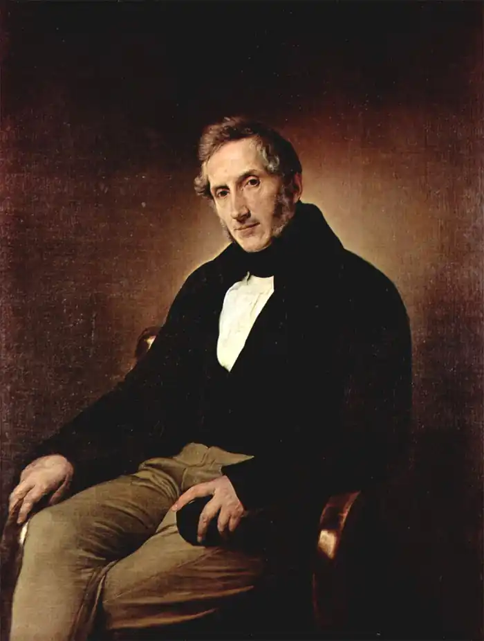
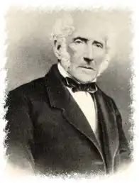

Родился 7 березня 1785 року в Мілане. Правоверний католик, він підтримував ліберальних переконань. Его раннє стихотворення, в особливостях релігіозних гімнів, входить у всі італійські антології, критичні роботи, особливо на лінгвістичні та релігіозні теми, залишаються в культурних обставинах, однаково більше всього вони відомі як автор історичного романа Обрученные (I Promessi Sposi). Менші удари його трагедії у стихах Графа Карманьола (Il Conte di Carmagnola, 1820) та Адельгіз (Адельчі, 1822).
К концу життя Мандзоні стояв національним символом, хотя жив єдиним в Мілані і своїм приміщенням був непомітний від нього. Застенчивий і нервний за характером, він не грав важливу ролі в італійському Рисорджименто, однако сочувствовав його целям. В конце життя був окружений почетом; після смерті 22 травня 1873 р. правительство збудувало його державні похорони. Дж. Верді посвятили Мандзони свого Реквіем.
Верховний роман "Обручені" вийшов в 1827 році, але остаточна редакція з багаточисленними змінами та виправленнями з'явилася в 1840—1842 роках. Формально роман Мандзоні продовжує романтичну традицію історичних романів, але по суті тут дуже мало від Вальтера Скотта, підходячи до Мандзонів до обраного часів зреалізований реалістичний, чим романтичний. У романах десяти особистих: дворянин, священники, інвізитори, трактирщики, погані ремесленники, — і навіть найзначніші з них чудово обрисовані як-нібудь виразною деталлю, в цілому роман дав широку панораму життя Італії 17 ст.